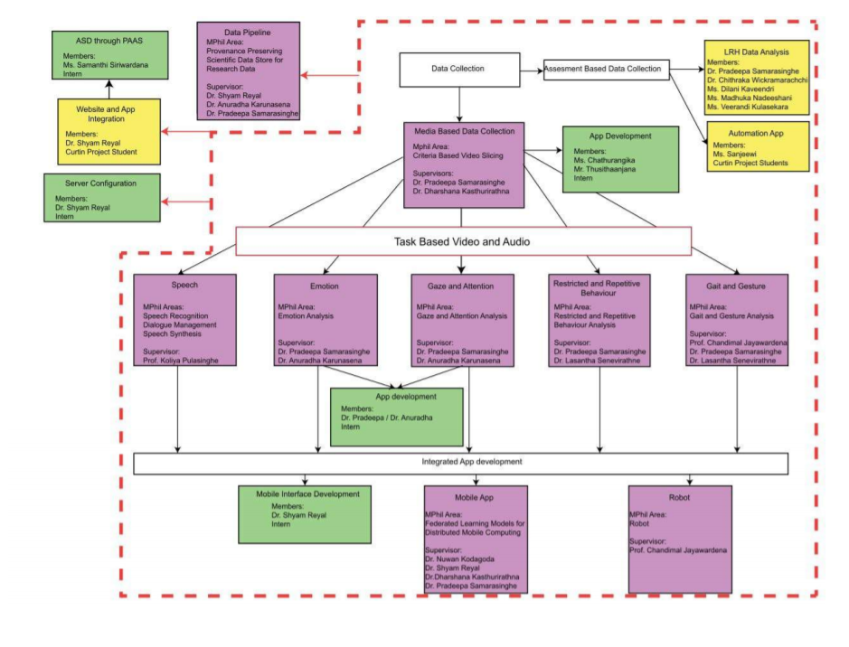

Autism is a neurodevelopmental disorder with few characteristic symptoms. Those symptoms include abnormalities in eye contact (eye gaze) and body language, lack of facial expressions, poorly integrated verbal and nonverbal communication, abnormal social approach and failure of normal back-and-forth conversation (reciprocity), deficits in understanding and use of gestures, stereotyped or repetitive motor movements, ritualized patterns of verbal and nonverbal behavior, excessive smelling or touching of objects. Availability of few or more symptoms and severity (vary by context and fluctuate over time) of those symptoms create “spectrum” of disorders, hence called Autism Spectrum Disorder (ASD). The Centers for Disease Control and Prevention (CDC)’s Autism and Developmental Disabilities Monitoring Network (ADDM) report that approximately one in 68 children can be identified with the above symptoms in USA. Systematic reviews have published varying rates in prevalence due to lack of organized screening and survey. In Asia, the South Asia region represents more than 20% of the world’s population, yet the prevalence of ASD in this part of the world is still largely unknown. In a study done in Sri Lanka it was revealed that by the age of 24 months, only 14.3% of children with autism have sought treatment, which was a low figure compared to Western countries. In Sri Lanka at present, there are few facilities available, but, for majority of families, these remain inaccessible because of high cost. Autism interventions require multidisciplinary resources (speech therapists, occupational therapists, and psychologists). These resources are not available in many parts of the country. In one study it was reported that majority of General Medical Officers (GMOs) in Sri Lanka, who are often the first point of contact for families, are unaware of the characteristics of ASD. A study done in a tertiary children hospital revealed that 34% of the doctors were unaware of the main presenting symptoms as speech delay and a further 39% failed to recognize the co-morbidities in ASD.The screening methods for ASD have not been systematic in our country over the past years. Many tools have been used, but up to now there are no standards set for screening of this vulnerable group of children. Signs of ASD appears as early as 6 months of age and early diagnosis is vital as early intensive behavioral interventions improve adaptive behavior, language and intelligence in autism and diagnostic delays can worsen prognosis. On early diagnosis, symptoms involving eye gaze, reciprocity, motor skills, gait and speech play major roles.
Overall Project Design

Methodology
System Overview
This research is carried out to develop an automated culturally
sensitive tool capable of screening young children for evidence of
ASD. The proposed tool collects gaze, gait, emotion and speech
information of children and analyses them for evidence of ASD. The
system overview of the proposed system during the training phase is
shown in the below figure.
As shown in the figure, the system collects video and audio of
children, in particular, related to gait, gaze, emotion and speech,
which are processed by two modules in the data pre-processor,
namely, audio extraction module and video segmentation module. The
purpose of the above two modules is to refine and prepare collected
data to be processed by the modules in the data analyzer. The data
analyzer module consists of three modules namely gaze and emotion
analysis module, gait and movement analysis module and speech
analysis module which analyzes gaze and emotion, gait and movement
and speech respectively for signs of ASD. The decisions made by
those three modules independently are, next, sent to the decision
maker module which makes a prediction based on the inputs. Once the
decision marker module makes a prediction, the prediction made is
compared with the decision made by a MHS who analyses the same
inputs. If the prediction made by the system is different from the
decision made by the Medical Health Specialists (MHS), the feedback
is fed to the decision maker module and the data analyzer module
would be further refined. Once the prediction made by the system is
equal to the MHS decision, the decision maker module is considered
ready for implementation.
Use of socially assistive robots in screening, diagnosis, and
therapeutic settings of ASD affected children have been reported in
various literature. It is interesting to note that autistic children
do like to interact with small humanoid robot compared to human.
Therefore, in this research, it is intended to use a humanoid robot
in a simulation environment to engage with children screened
positive by initial assessments. A humanoid robot with required
audio and video sensors to capture both verbal and non-verbal cues
of communication, facial expressions, gestures and postures, and
gait and movement of children with required sensitivity will be
utilized in this research. This robot will be equipped with
aforesaid algorithms to generate a screening report with an
assessment score that indicates how apparent the deficiency of
behavior is affected by ASD. A report of this nature will be used as
a precursor for diagnosis as well as effectiveness of treatment
plans. Some children who are normal until 12 months to 18 months of
age “Regress” to ASD as a type of ASD. The CSSAR can be employed to
assess the “Progress” or the “Regress” of children identified by
tier-1 or getting treatments as shown in the below figure.
There is a variation of appearing the array of autistic symptoms in children with ASD. Sometimesthese symptoms are highly apparent or are subtle and difficult to identify. Fuzziness of the level of significance of apparent ASD symptoms will be captured with the aid of an expert panel which consists of a child psychiatrist, a pediatric neurologist, and a speech therapist to train the SAR to improve its accuracy. In this simulation environment, we can capture data from children who are susceptible as ASD affected children. Necessary modifications will be implemented to this robot to capture the audio and video signals of these children for future research to improve the quality of assessments.
Grant Details
Type : Accelerating Higher Education Expansion and
Development (AHEAD) – World bank funded Development Oriented
Research (DOR) Grant
Grant amount : Rs. 10 Million.
Proposed Budget :